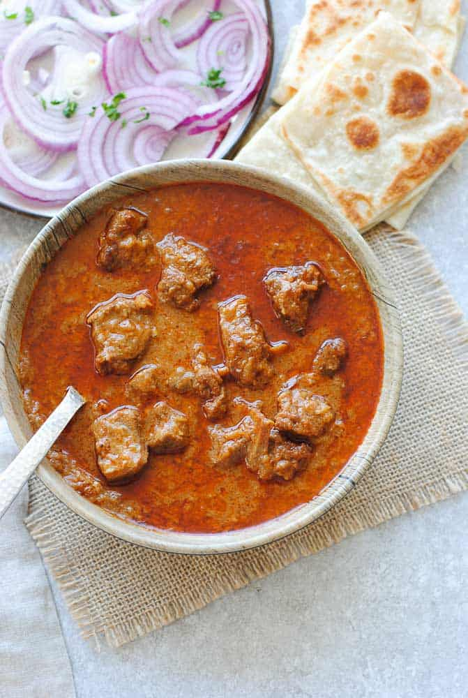

Beef Korma is a flavorful and aromatic Indian dish that is made with tender beef cooked in a creamy, spiced sauce. The dish is typically made with a blend of aromatic spices such as garam masala, coriander, cumin, turmeric, and cayenne pepper, which are combined with yogurt and cream to create a rich and creamy sauce.
 Go Back